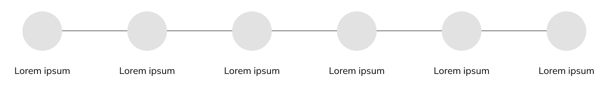
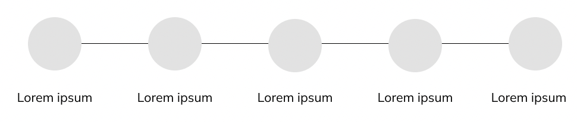
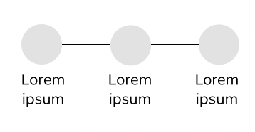

Graphical Elements
These graphical elements are for use within homepage and project pages.
Desktop and Tablet Shanel Adolfo Picture
Mobile Shanel Adolfo Picture
Desktop Project Picture
Tablet Project Picture
Mobile Project Picture
Desktop Timeline
Tablet Timeline
Mobile Timeline
Accessibility Considerations
Be sure to make all pictures include alt text. Make sure all timelines match color contrast ratio with background of the pages.
Usage
- The Shanel Adolfo pictures will be used for homepages only.
- The Project pictures and timelines will be used for Project pages only.
Code Examples
Code will be used for all images:
<div class="mb-4 graphical-elements">
<h2> Desktop and Tablet Shanel Adolfo Picture</h2>
<img src="../img/shanel-circle-picture.png"
alt="Picture of the portfolio owner, Shanel Adolfo" id="shanel-picture" width="300px">
</div>